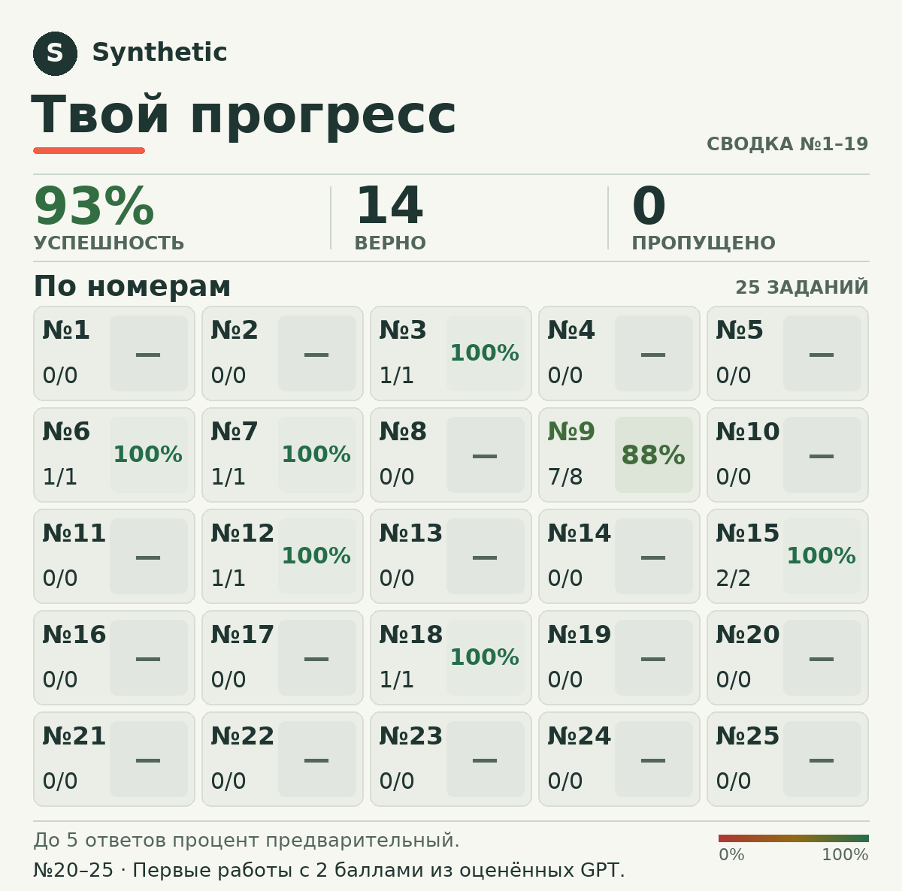

Главное меню
Выберите раздел в меню.
Тексты и кнопки синтетического ученика из диспетчера companion и PostgreSQL. Вёрстка этой страницы воспроизводит сообщения тестового транспорта. Фотографии и нативный набор Telegram здесь не воспроизводятся.
Выберите раздел в меню.
Настройки Персональная тренировка включена. Вид формул: обычное оформление. Если формулы не видны в вашем Telegram, выберите «Картинкой», затем продолжите сохранённое задание из меню.
Тренировки Короткая тренировка — 5 задач. Начните с персональной диагностической пятёрки — история не требуется.
Выберите номер для короткой тренировки.
№9: весь номер или конкретный тип?
Линейное уравнение со скобками в обеих частях · 1 из 5 · №9Решите уравнение: -x - 1 + 4(x - 2) = 3(-2 - x) + 9Напишите ответ в чат.
Пока неверно. Попробуй ещё раз.
Подсказка №1:Раскрой скобки и собери слагаемые с x отдельно от чисел.
Разбор:1. Раскроем скобки и приведём подобные: 3x - 9 = -3x + 3.2. Соберём переменные и числа отдельно: 6x = 12.3. Разделим обе части на 6 : x = 2.
Верно. Самостоятельное закрепление: 1/3.
Тренировка завершена! Пройдено задач: 5 из 5. Решено верно: 4/5. Самостоятельно: 4/5. Что изменилось • Линейное уравнение со скобками в обеих частях: Получается; самостоятельное закрепление 0/3 → 3/3. Что дальше Можно начать новую персональную тренировку или выбрать номер.
Тренировки Короткая тренировка — 5 задач. Попробуйте новые типы в персональной тренировке.
Тренировка завершена! Пройдено задач: 5 из 5. Решено верно: 5/5. Самостоятельно: 5/5. Что изменилось • Приведённое полное квадратное x²+bx+c=0: Закрепляется; самостоятельное закрепление 0/3 → 1/3. • Линейное уравнение со скобками и переменной вне скобок: Закрепляется; самостоятельное закрепление 0/3 → 1/3. • Диаметр колеса: Закрепляется; самостоятельное закрепление 0/3 → 1/3. • Фиксированная и переменная стоимость колодца: Закрепляется; самостоятельное закрепление 0/3 → 1/3. • Средняя линия и площади: Закрепляется; самостоятельное закрепление 0/3 → 1/3. Что дальше Рекомендую: Средняя линия и площади — закрепляется.
Тренировка завершена! Пройдено задач: 5 из 5. Решено верно: 5/5. Самостоятельно: 5/5. Что изменилось • Неприведённое полное квадратное ax²+bx+c=0: Закрепляется; самостоятельное закрепление 0/3 → 1/3. • Площадь ромба: Закрепляется; самостоятельное закрепление 0/3 → 1/3. • Деление обыкновенных дробей: Закрепляется; самостоятельное закрепление 0/3 → 1/3. • Теорема Пифагора: Закрепляется; самостоятельное закрепление 0/3 → 1/3. • Между какими целыми лежит дробь: Закрепляется; самостоятельное закрепление 0/3 → 1/3. Что дальше Рекомендую: Между какими целыми лежит дробь — закрепляется.

№9 · Уравнения Решено правильно: 7 Задач с ответом: 8 Успешность: 88% С первой попытки: 7 Со второй попытки: 0 С подсказкой: 0 Без подсказки: 7 Новых вариантов самостоятельно: 7 Пропущено: 0 По семействам: • Приведённое полное квадратное x²+bx+c=0: 1/1 · 100% · Закрепляется, 1/3 • Неприведённое полное квадратное ax²+bx+c=0: 1/1 · 100% · Закрепляется, 1/3 • Произведение линейных множителей равно нулю · Нет данных • Неполное квадратное ax²-c=0 · Нет данных • Простое линейное ax+b=c · Нет данных • Переменная с двух сторон ax+b=cx+d · Нет данных Типы 1–6 из 9